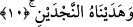
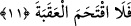
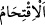
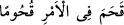

10. Ona iki yolu (doğru ve eğriyi) göstermedik mi?
Bu cümle yukarda geçen “vermedik mi?” cümlesi üzerine atfedilmiştir. Çünkü bu
cümle aslında olumlu anlam ifâde etmektedir. Yâni biz ona bunları verdik ve ona hayır
ve şer yolunu gösterdik demektir. Nitekim Hz. Peygamber (a.s.) “Bu iki yol, hayır yolu
ve şer yoludur. Şer yolu size hayır yolundan daha sevimli olmasın.”[107] buyurmuştur.
Ya da “iki yoldan” maksad annenin iki göğsü olabilir. Çünkü annenin iki memesi
sütün inmesi için iki yüksek yol, yeni doğan çocuğun hayatını sürdürebilmesi için iki
temel sebebtir. Dünyaya gelir gelmez annesini emmekten âciz olan bebeğe onu emme
imkanı bahşetmek büyük bir kudret ve muazzam bir nimettir.
Önceden söz söylemez, dili bağlı bir yavrucak değil miydin?
Bütün rızkın ana rahminde göbekten gelirdi.
Göbek kesilince oradan gelen rızkın da kesildi
Bu sefer elinle annenin memesine asılmadın mı?
“Necd” kelimesinin asıl anlamı yüksek mekan demektir. Şerrin aksine olarak hayır
yüksek bir mekan yerinde sayılmıştır. Çünkü şer fıtratın zirvesinden, bedbahtlığın
çukuruna inmeyi gerektirir. Şu halde “Necdeyn/iki yol” kelimesinin kullanılması tağlîb
yoluyla olmuştur. Ya da şer fiili insanın vehmindeki kuvvetine göre yüksek mekan
sûretinde tasvir edilmiştir. Bu sebeple her türlü şeye ulaşmak ve onu tamamlamak için
olan yükselmek anlamında kullanılmıştır.
Şeyhzâde der ki: Hayrı ve şerri gösteren alâmetler açık hale gelince bunlar iki
yüksek yol gibi olmuşlardır. Çünkü yüksekte olan yolun gözlere âşikâr olması gibi her
ikisi de akılların önünde açık ve nettirler.
Bu âyette ruh yoluna ve kalp yoluna işâret vardır. Bu iki yolu nefsin ruha, hevânın da
kalbe galebesi iptal etmiştir.
11. Fakat o, sarp yokuşu aşamadı.
“
” zor bir işe girmek ve onu zorlukla aşmak demektir. Kâmûs’ta der ki: “
” ansızın hiç düşünüp taşınmadan kendisini bir işin içine attı, demektir.
“Akabe” sarp dağ yolu demektir.
Yani o kimse sâlih ameller işleyerek bu büyük nimetlere karşı şükrünü eda edemedi.
Sâlih amellerin sarp yokuş şeklinde ifâde edilmesi, sâlih amellerin yoluna girmenin
zorluğundan dolayıdır.